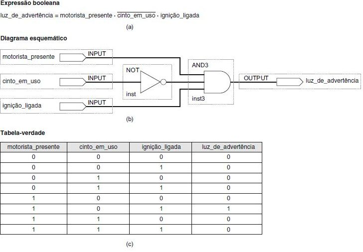

Circuito 1: deslocador lógico para a esquerda.

Circuito 2: deslocador lógico para a direita.

Circuito 3: deslocador aritmético para a direita.

Um circuito combinacional é especificado pela tabela verdade abaixo.
Para três combinações de entrada, a saída do circuito não importa (“X”).
A especificação é implementada como um circuito usando a seguinte expressão booleana: f = (not(a) and not(c)) or b.
Qual será a saída do circuito quando receber a combinação de entrada <a, b, c> = <1,1,0>?
| a | b | c | Saída | |
|---|---|---|---|---|
| 0 | 0 | 0 | 1 | |
| 0 | 0 | 1 | 0 | |
| 0 | 1 | 0 | 1 | |
| 0 | 1 | 1 | 1 | |
| 1 | 0 | 0 | 0 | |
| 1 | 0 | 1 | X | |
| 1 | 1 | 0 | X | |
| 1 | 1 | 1 | X |
Opções:
A. 0 (valor lógico baixo)
B. 1 (valor lógico alto)
C. X (não importa)
D. Desconhecido
Para <a, b, c> = <1,1,0>, teremos: f = (not(a) and not (c)) + b = (0 and 1) or 1 = 0 or 1 = 1.
Opção correta: B.
Para cada um dos circuitos abaixo, explique a sua função e faça um desenho detalhando o funcionamento.
Circuito 1: deslocador lógico para a esquerda.
Circuito 2: deslocador lógico para a direita.
Circuito 3: deslocador aritmético para a direita.
(ENADE 2019) Um sistema de tempo real satisfaz explicitamente restrições de tempo de resposta, podendo ter consequências como riscos ou falhas caso não cumpra essas restrições.
O circuito lógico a seguir faz parte de um sistema de tempo real que realiza o acionamento de um alarme.
Nesse circuito existem vários atrasos de propagação do sinal, que por sua vez geram atrasos no acionamento do alarme.
Na forma como a lógica está implementada, o circuito não atende o requisito de tempo real especificado pelo sistema. Para cada porta lógica utilizada, os atrasos típicos, em unidades de tempo (u.t.), são:
| Porta | Atraso (u.t.) |
|---|---|
| AND | 3 |
| OR | 4 |
| NOT | 1 |
Após a simplificação do circuito, qual das alternativas abaixo mostra o menor tempo possível para o acionamento do alarme?
Opções:
A. 9 u.t.
B. 10 u.t.
C. 3 u.t.
D. 4 u.t.
E. 6 u.t.
Como as entradas A e B estão ligadas a uma porta AND, e o mesmo acontece com as entradas C e D, podemos fazer a simplificação utilizando o resultado dessas duas portas AND.
A tabela da verdade ficaria:
| A and B | C and D | Y |
|---|---|---|
| 0 | 0 | 0 |
| 0 | 1 | 0 |
| 1 | 0 | 1 |
| 1 | 1 | 1 |
Fica claro que a saída Y segue o estado da saída de A AND B, portanto, esse é o circuito minimizado.
O atraso de uma porta AND é de 3 u.t.
(Sistemas Digitais - Princípios e Aplicações - Tocci, Widmer e Moss - 11 Ed.)
A seguinte afirmação descreve o modo como um circuito lógico precisa operar a fim de acionar um indicador de alerta de cinto de segurança em um carro.
Se o motorista estiver presente e não estiver usando cinto e a ignição estiver acionada, então, acenda a luz de advertência.
Descreva o circuito usando:
Álgebra booleana;
Diagramas de símbolos lógicos;
Tabela da verdade.

(Sistemas Digitais - Princípios e Aplicações - Tocci, Widmer e Moss - 11 Ed.)
Vamos projetar um circuito lógico que controla uma porta de elevador em um prédio de três andares.
O circuito, na figura abaixo, tem quatro entradas:
M é um sinal lógico que indica quando o elevador está se movendo (M = 1) ou parado (M = 0);
F1, F2 e F3 são os sinais indicadores dos andares que são, normalmente, nível BAIXO, passando para nível ALTO apenas quando o elevador estiver posicionado em determinado andar.
A saída do circuito é o sinal ABRIR que normalmente é nível BAIXO e vai para o ALTO quando a porta do elevador precisar ser aberta.
Qual a expressão booleana do circuito do elevador?
Visto que o elevador não está em mais de um andar ao mesmo tempo, apenas uma das entradas relativas aos andares pode ter nível ALTO em um dado momento. Isso significa que todos os casos da tabela-verdade em que mais de uma entrada relativa aos andares for nível 1 são condições de irrelevância. Podemos colocar um x na coluna da saída ABRIR para aqueles oito casos em que mais de uma entrada F for nível 1.
Observando os outros oito casos, quando M = 1 o elevador se move, então a saída ABRIR tem de ser 0, pois não queremos que a porta do elevador abra. Quando M = 0 (elevador parado), queremos ABRIR = 1 proporcionada por uma das entradas, relativas aos andares, em nível 1. Quando M = 0 e todas as entradas relativas aos andares forem 0, o elevador está parado, mas não está adequadamente alinhado com qualquer andar, de forma que desejamos ABRIR = 0 para manter a porta fechada.
A tabela-verdade agora está completa e podemos transferir as informações para o mapa Karnaugh. Esse mapa tem apenas três 1s, porém possui oito condições de irrelevância.
Alterando quatro desses quadrados de irrelevância para 1s, podemos gerar quartetos que contenham os 1s originais.
É o melhor que podemos fazer quanto à minimização da expressão de saída. Verifique que os agrupamentos feitos geram a expressão para a saída ABRIR mostrada.
(Sistemas Digitais - Princípios e Aplicações - Tocci, Widmer e Moss - 11 Ed.)
Qual é a expressão correspondente ao circuito abaixo?

(Sistemas Digitais - Princípios e Aplicações - Tocci, Widmer e Moss - 11 Ed.)
Projete um circuito lógico com 3 entradas (I1 , I0 e S) e uma saída Z, que operam da seguinte forma:
Quando S = 1, a saída Z terá o mesmo valor da entrada I1 .
Quando S = 0, a saída Z terá o mesmo valor da entrada I0 .
Qual será a expressão e o circuito correspondente a estas condições?
(Sistemas Digitais - Princípios e Aplicações - Tocci, Widmer e Moss - 11 Ed.)
Analise o circuito, as entradas e a seleção, e preencha as saídas da tabela da verdade abaixo.
| I0 | I1 | I2 | I3 | S1 | S2 | Z |
|---|---|---|---|---|---|---|
| I0 | I1 | I2 | I3 | 0 | 0 | |
| I0 | I1 | I2 | I3 | 0 | 1 | |
| I0 | I1 | I2 | I3 | 1 | 0 | |
| I0 | I1 | I2 | I3 | 1 | 1 |
| I0 | I1 | I2 | I3 | S1 | S2 | Z |
|---|---|---|---|---|---|---|
| I0 | I1 | I2 | I3 | 0 | 0 | I0 |
| I0 | I1 | I2 | I3 | 0 | 1 | I1 |
| I0 | I1 | I2 | I3 | 1 | 0 | I2 |
| I0 | I1 | I2 | I3 | 1 | 1 | I3 |
Em um dado instante no tempo (t0), o circuito abaixo possui os seguintes valores nas entradas de seus registradores:
Entrada do registrador R1: 0xAA;
Entrada do registrador R2: 0x55;
Entrada do registrador R3: 0xAC;
Qual será o valor das saídas dos registradores após o terceiro pulso de clock?
Opções:
A. R1: 0xAA, R2: 0x55, R3: 0xAC;
B. R1: 0xAC, R2: 0x55, R3: 0xAA;
C. R1: 0xXX, R2: 0xAA, R3: 0x55;
D. R1: 0xXX, R2: 0xXX, R3: 0xAB;
E. R1: 0xXX, R2: 0xXX, R3: 0xAA;
A cada pulso do clock, a entrada do registrar é transferida para a saída do mesmo registrador.
Após o primeiro pulso do clock, não temos informações sobre a entrada do R1, portanto, adotaremos o valor XX.
Dessa forma, após cada pulso do clock, as saídas serão:
| Pulso do Clock | Saída de R1 | Saída de R2 | Entrada de R3 | Saída de R3 |
|---|---|---|---|---|
| 1 | 0xAA | 0x55 | 0x55 | 0xAC |
| 2 | 0xXX | 0xAA | 0xAB | 0x55 |
| 3 | 0xXX | 0xXX | 0xXX | 0xAB |
Opção correta: D.
(DLCI) Quais são os valores da saída “z” nos tempos t1 e t2?
O circuito é composto por um flip-flop disparado na borda positiva e uma porta XOR ideal (que não tem atraso).
Opções:
A. z @ t1 = 0; z @ t2 = 0.
B. z @ t1 = 0; z @ t2 = 1.
C. z @ t1 = 1; z @ t2 = 0.
D. z @ t1 = 1; z @ t2 = 1.
E. A informação apresentada é insuficiente para determinar a saída z.
Para o instante t1, o valor armazenado foi definido no momento da borda de subida de um clock não mostrado na figura.
Portanto, não temos informação suficiente para determinar a saída nesse instante.
Para o instante t2, a saída é definida pelo resultado de x XOR y no momento da borda de subida do clock (que ocorre entre t1 e t2).
Nesse momento, x e y possuem valor 1, portanto o valor de z será 1 XOR 1 = 0.
Opção correta: E.